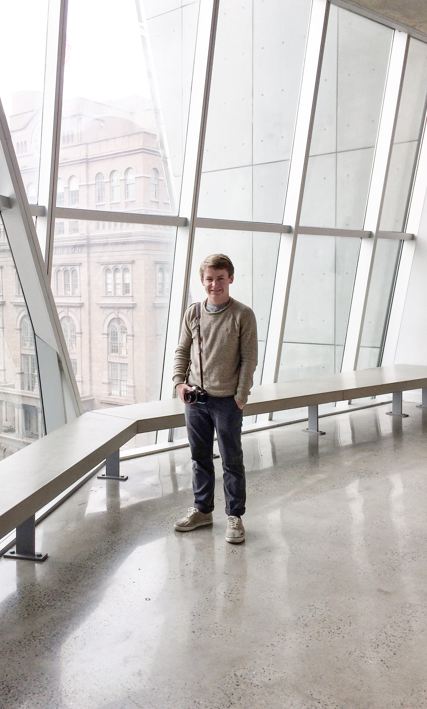

I'm Luke Skinner, a student living in sunny San Diego, California.
Constantly, I am trying to learn more about people and the way the world works. A surplus of this knowledge is gained through hearing and sharing stories and experiences. The human experience, I believe, is made tolerable through sharing and listening.
I spend my time taking photographs, writing code, and making coffee. Moreover, I enjoy reading and writing and thinking. Send me a message if you ever want to chat.
Constantly, I am trying to learn more about people and the way the world works. A surplus of this knowledge is gained through hearing and sharing stories and experiences. The human experience, I believe, is made tolerable through sharing and listening.
I spend my time taking photographs, writing code, and making coffee. Moreover, I enjoy reading and writing and thinking. Send me a message if you ever want to chat.